Advanced usage
Here we will show a few advanced techniques for data visualization using Gnuplot.jl.
Named datasets
A dataset may have an associated name whose purpose is to use it multiple times for plotting, while sending it only once to gnuplot. A dataset name must begin with a $.
A named dataset is defined as a Pair{String, Tuple}, e.g.:
"\$name" => (1:10,)and can be used as an argument to both @gp and gsp, e.g.:
x = range(-2pi, stop=2pi, length=100);
y = sin.(x)
name = "\$MyDataSet1"
@gp name=>(x, y) "plot $name w l lc rgb 'black'" "pl $name u 1:(1.5*\$2) w l lc rgb 'red'"Both curves use the same input data, but the red curve has the second column (\$2, corresponding to the y value) multiplied by a factor 1.5.
A named dataset comes in hand also when using gnuplot to fit experimental data to a model, e.g.:
# Generate data and some noise to simulate measurements
x = range(-2pi, stop=2pi, length=20);
y = 1.5 * sin.(0.3 .+ 0.7x);
err = 0.1 * maximum(abs.(y)) .* fill(1, size(x));
y += err .* randn(length(x));
name = "\$MyDataSet1"
@gp "f(x) = a * sin(b + c*x)" :- # define an analytical model
@gp :- "a=1" "b=1" "c=1" :- # set parameter initial values
@gp :- name=>(x, y, err) :- # define a named dataset
@gp :- "fit f(x) $name via a, b, c;" # fit the dataThe parameter best fit values can be retrieved as follows:
vars = gpvars();
@info("Best fit values:",
a = vars.a,
b = vars.b,
c = vars.c)┌ Info: Best fit values:
│ a = 1.50835934408651
│ b = 0.245929126350693
└ c = 0.695587193420976Multiplot
Gnuplot.jl can draw multiple plots in the same figure by exploiting the multiplot command. Each plot is identified by a positive integer number, which can be used as argument to @gp to redirect commands to the appropriate plot.
Recycling data from the previous example we can plot both data and best fit model (in plot 1) and residuals (in plot 2):
@gp "f(x) = a * sin(b + c*x)"
@gp :- "a=$(vars.a)" "b=$(vars.b)" "c=$(vars.c)"
@gp :- name=>(x, y, err)
@gp :- "set multiplot layout 2,1"
@gp :- 1 "p $name w errorbars t 'Data'"
@gp :- "p $name u 1:(f(\$1)) w l t 'Best fit model'"
@gp :- 2 "p $name u 1:((f(\$1)-\$2) / \$3):(1) w errorbars t 'Resid. [{/Symbol s}]'"
@gp :- line(x, 0, "w l notit dt 2 lc rgb 'black'") # reference line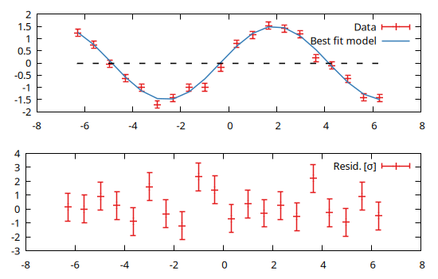
Note that the order of the plots is not relevant, i.e. we would get the same results with:
@gp "f(x) = a * sin(b + c*x)"
@gp :- "a=$(vars.a)" "b=$(vars.b)" "c=$(vars.c)"
@gp :- name=>(x, y, err)
@gp :- "set multiplot layout 2,1"
@gp :- 2 "p $name u 1:((f(\$1)-\$2) / \$3):(1) w errorbars t 'Resid. [{/Symbol s}]'"
@gp :- line(x, 0, "w l notit dt 2 lc rgb 'black'") # reference line
@gp :- 1 "p $name w errorbars t 'Data'"
@gp :- "p $name u 1:(f(\$1)) w l t 'Best fit model'"Customized layout
It is also possible to customize the plot layout using the margin keywords (see Histograms for further info on how to generate andi display histograms):
# Generate random numbers
x = randn(1000);
y = randn(1000);
# Overall plot margins (normalized in the range 0:1)
margins = (l=0.08, r=0.98, b=0.13, t=0.98)
# Right and top margins of main plot
right, top = 0.8, 0.75
# Gap between main plot and histograms
gap = 0.015
# Main plot
@gp "set multiplot"
@gp :- 1 ma=margins rma=right tma=top :-
@gp :- x y "w p notit" xlab="X" ylab="Y"
# Histogram
binsize = 0.5
h = hist(x, y, bs1=binsize, bs2=binsize, range1=gpranges().x, range2=gpranges().y)
# Project histogram on X
b = hist_bins(h, 1)
c = sum(hist_weights(h), dims=2) ./ 2
@gp :- 2 ma=margins bma=top+gap rma=right :-
@gp :- "set xtics format ''" "set ytics format ''" xlab="" ylab="" :-
@gp :- b c fill(binsize/2, length(b)) c "w boxxy notit fs solid 0.4" :-
# Project histogram on Y
b = hist_bins(h, 2)
c = sum(hist_weights(h), dims=1) ./ 2
@gp :- 3 ma=margins lma=right+gap tma=top :-
@gp :- "unset xrange" :-
@gp :- c b c fill(binsize/2, length(b)) "w boxxy notit fs solid 0.4" :-
@gp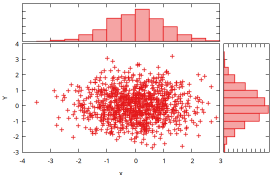
Mixing 2D and 3D plots
A multiplot can also mix 2D and 3D plots:
x = y = -10:0.33:10
@gp "set multiplot layout 1,2"
# 2D
@gp :- 1 x sin.(x) ./ x "w l notit"
# 3D
sinc2d(x,y) = sin.(sqrt.(x.^2 + y.^2))./sqrt.(x.^2+y.^2)
fxy = [sinc2d(x,y) for x in x, y in y]
@gsp :- 2 x y fxy "w pm3d notit"Multiple sessions
Gnuplot.jl can handle multiple sessions, i.e. multiple gnuplot processes running simultaneously. Each session is identified by an Session ID (or sid).
In order to redirect commands to a specific session simply insert a symbol into your @gp or @gsp call, e.g.:
@gp :GP1 "plot sin(x)" # opens first window
@gp :GP2 "plot sin(x)" # opens secondo window
@gp :- :GP1 "plot cos(x)" # add a plot on first windowThe session ID must appear as first argument, or immediately afetr :-. If the session ID is not specified the value stored in Gnuplot.options.default will be used.
Starting from version 1.6.0 the session name must be provided as a literal Symbol. If you need to address a session using a variable you should update Gnuplot.options.default, as in the following example:
for sid in [:one, :two, :three]
Gnuplot.options.default = sid
@gp title=string(sid) rand(100) "w p notit"
endThe names of all current sessions can be retrieved with session_names():
julia> println(session_names())[:splash, :three, :GP1, :GP2, :one, :two]
To quit a specific session use Gnuplot.quit():
julia> Gnuplot.quit(:GP1)0
The output value is the exit status of the underlying gnuplot process.
You may also quit all active sessions at once with Gnuplot.quitall():
julia> Gnuplot.quitall()
Histograms
Gnuplot.jl provides facilities to compute and display histograms, e.g.:
x = randn(1000);
@gp hist(x)The hist() function also accept keywords to set the range to consider (range= keyword) and either the bin size (bs=) or the total number of bins (nbins=) in the histogram. A finer control on the output is achieved by exploiting the (hist_bins) and (hist_weights) functions, e.g.:
x = randn(1000);
h = hist(x, range=3 .* [-1,1], bs=0.5)
@gp hist_bins(h) hist_weights(h) "w step t 'Data' lc rgb 'red'"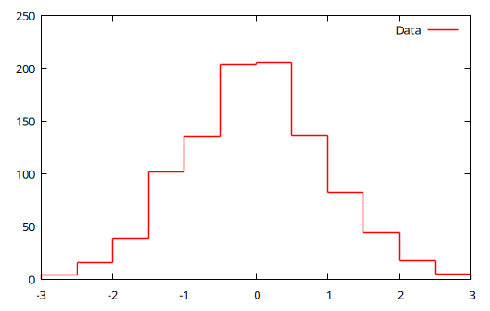
The hist() function compute also 2D histograms by passing two vectors (with the same lengths), e.g.:
x = randn(10_000)
y = randn(10_000)
h = hist(x, y)
@gp h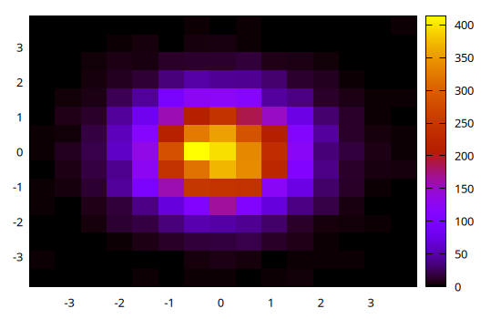
Again, a finer control can be achieved by specifying ranges, bin size or number of bins (along both dimensions) and by explicitly using the the (hist_bins) and (hist_weights) functions:
x = randn(10_000)
y = randn(10_000)
h = hist(x, y, bs1=0.25, nbins2=20, range1=[-3,3], range2=[-3,3])
@gp "set size ratio -1" hist_bins(h, 1) hist_bins(h, 2) hist_weights(h) "w image notit"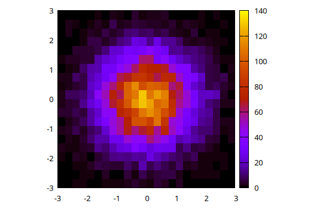
Alternatively, 2D histograms may be displayed using the boxxyerror plot style which allows more flexibility in, e.g., handling transparencies and drawing the histogram grid. In this case the data can be prepared using the boxxy() function, as follows:
@gp "set size ratio -1" "set style fill solid 0.5 border lc rgb 'gray'" :-
@gp :- boxxy(h) "w boxxy notit lc pal"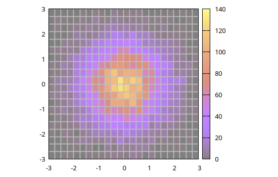
Contour lines
Although gnuplot already handles contours by itself (with the set contour command), Gnuplot.jl provides a way to calculate contour lines paths before displaying them, using the contourlines() function. We may preview such lines with:
x = randn(10_000)
y = randn(10_000)
h = hist(x, y)
clines = contourlines(h, "levels discrete 10, 30, 60, 90");
@gp clines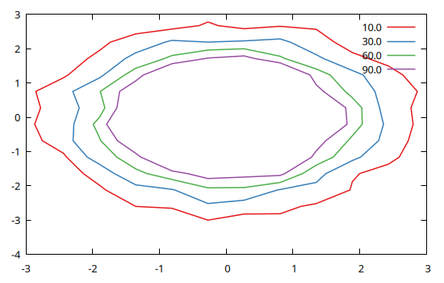
By exploiting the fields of the Gnuplot.IsoContourLines structure we may also customize line widths, colors and dashed pattern according to their z level, and plot them on top of the 2D histogram:
@gp "set size ratio -1" "set style fill solid 0.5 border lc rgb 'gray'" :-
@gp :- boxxy(h) "w boxxy notit lc pal"
for i in 1:length(clines)
@gp :- clines[i].data "w l t '$(clines[i].z)' lw $i dt $i lc pal" :-
end
@gp :- key="outside top center box horizontal"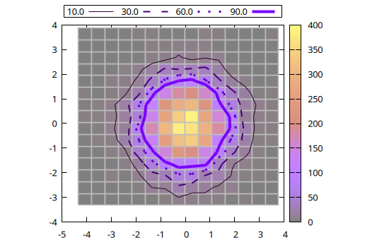
The contourlines() function also allows to calculate the contour lines encompassing a given fraction of the total counts of a 2D histogram. E.g. to plot the contours corresponding to 1, 2, and 3 $\sigma$ of a 2D Gaussian distribution:
x = randn(10^5);
y = randn(10^5);
h = hist(x, y, nbins1=20, nbins2=20);
# Calculate probability within 0 < r < σ
p(σ) = round(1 - exp(-(σ^2) / 2), sigdigits=3)
# Draw contour lines at 1, 2 and 3 σ
clines = contourlines(h, p.(1:3));
@gp palette(:beach, smooth=true, rev=true) "set grid front" "set size ratio -1" h clines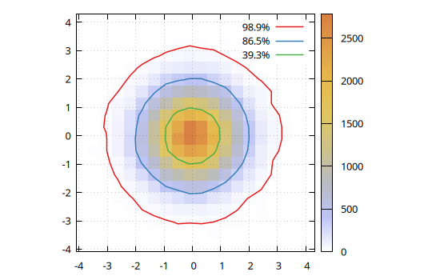
Interpolation of 2D scattered data
The dgrid3d() function allows to interpolate 2D scattered data onto a 2D regular grid, e.g.:
x = (rand(200) .- 0.5) .* 3;
y = (rand(200) .- 0.5) .* 3;
z = exp.(-(x.^2 .+ y.^2));
# Interpolate on a 20x30 regular grid with splines
gx, gy, gz = dgrid3d(x, y, z, "20,30 splines")
@gsp "set size ratio -1" "set xyplane at 0" xlab="X" ylab="Y" :-
@gsp :- x y z "w p t 'Scattered data' lc pal"
@gsp :- gx gy gz "w l t 'Interpolation on a grid' lc pal"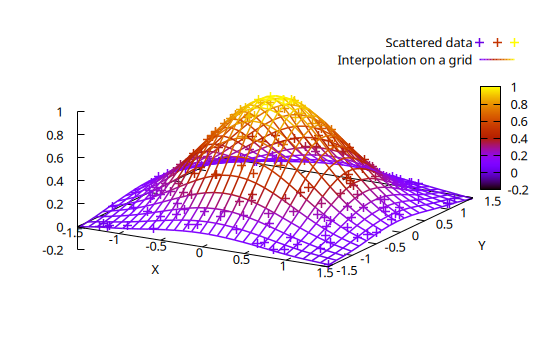
The splines algorithm may be very slow on large datasets. An alternative option is to use a smoothing kernel, such as gauss.
The interpolated data in scarcely sampled regions are poorly constrained, i.e. they are actually extrapolated values. By using the extra=false keyword all extrapolated values are set to NaN:
x = randn(2000) .* 0.5;
y = randn(2000) .* 0.5;
rsq = x.^2 + y.^2;
z = exp.(-rsq) .* sin.(y) .* cos.(2 * rsq);
@gsp "set size ratio -1" palette(:balance, smooth=true) "set view map" "set pm3d" :-
@gsp :- "set multiplot layout 1,3" xr=[-2,2] yr=[-2,2] :-
@gsp :- 1 tit="Scattered data" x y z "w p notit lc pal"
# Show extrapolated values
gx, gy, gz = dgrid3d(x, y, z, "40,40 gauss 0.1,0.1")
@gsp :- 2 tit="Interpolation on a grid\\n(extrapolated values are shown)" gx gy gz "w l notit lc pal"
# Hide exrapolated values
gx, gy, gz = dgrid3d(x, y, z, "40,40 gauss 0.1,0.1", extra=false)
@gsp :- 3 tit="Interpolation on a grid\\n(extrapolated values are hidden)" gx gy gz "w l notit lc pal"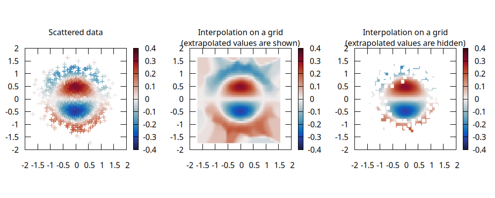
Animations
The Multiplot capabilities can also be used to stack plots one above the other in order to create an animation, as in the following example:
x = y = -10:0.33:10
fz(x,y) = sin.(sqrt.(x.^2 + y.^2))./sqrt.(x.^2+y.^2)
fxy = [fz(x,y) for x in x, y in y]
@gsp "set xyplane at 0" "unset colorbox" cbr=[-1,1] zr=[-1,1]
frame = 0
for direction in [-1,1]
for factor in -1:0.1:1
global frame += 1
@gsp :- frame x y direction * factor .* fxy "w pm3d notit" :-
end
end
@gspHere the frame variable is used as multiplot index. The animation can be saved in a GIF file with:
Gnuplot.save("assets/animation.gif", term="gif animate size 480,360 delay 5")"assets/animation.gif"The following example is copied from Makie and uses the webp terminal to create an animation of the Lorenz attractor:
Base.@kwdef mutable struct Lorenz
dt::Float64 = 0.01
σ::Float64 = 10
ρ::Float64 = 28
β::Float64 = 8/3
x::Float64 = 1
y::Float64 = 1
z::Float64 = 1
end
function step!(l::Lorenz)
dx = l.σ * (l.y - l.x)
dy = l.x * (l.ρ - l.z) - l.y
dz = l.x * l.y - l.β * l.z
l.x += l.dt * dx
l.y += l.dt * dy
l.z += l.dt * dz
return (l.x, l.y, l.z)
end
Nframes = 120
Npoints = 50
attractor = Lorenz()
@gsp xr=30 .* [-1,1] yr=30 .* [-1,1] zr=[0,60] :-
@gsp :- "set origin -0.1,-0.1" "set size 1.2,1.2" :-
@gsp :- "set object 1 rectangle from screen 0,0 to screen 1,1 fillcolor rgb 'black' behind" :-
@gsp :- "set border back lc rgb '#eeeeee' lt 1 lw 1.5" :-
@gsp :- "set view equal xyz" "set xyplane at 0" :-
points = Vector{NTuple{3, Float64}}()
pcolors = Vector{Int}()
for iframe in 1:Nframes
for i in 1:Npoints
push!(points, step!(attractor))
push!(pcolors, iframe)
end
(iframe == 1) && continue
@gsp :- iframe "set view 70, $(45 + 17 * sin(2pi * iframe / Nframes))" :-
local c = v2argb(:inferno, pcolors, alpha=0.5)
@gsp :- [getindex.(points, i) for i in 1:3]... c "w l notit lw 1.5 lc rgb var" :-
end
@gsp
Gnuplot.save("assets/lorenz.webp", term="webp enhanced size 600,400 animate delay 0.1")
Direct command execution
When gnuplot commands are passed to @gp or @gsp they are stored in a session for future use, or to be saved in Gnuplot scripts. If you simply wish to execute a command without storing it in the session, and possibly retrieve a value, use gpexec. E.g., to retrieve the value of a gnuplot variable:
julia> gpexec("print GPVAL_TERM")"unknown"
You may also provide a session ID as first argument (see Multiple sessions) to redirect the command to a specific session.
Alternatively you may start the The gnuplot REPL to type commands directly from the Julia prompt.
The gnuplot REPL
The Gnuplot.jl package comes with a built-in REPL mode to directly send commands to the underlying gnuplot process. Since the REPL is a global resource, the gnuplot mode is not enabled by default. You can start it with:
Gnuplot.repl_init(start_key='>')The customizable start_key character is the key which triggers activation of the REPL mode. To quit the gnuplot REPL mode hit the backspace key.
Dry sessions
A "dry session" is a session with no underlying gnuplot process. To enable dry sessions type:
Gnuplot.options.dry = true;before starting a session (see also Options). Note that the dry option is a global one, i.e. it affects all sessions started after setting the option.
Clearly, no plot can be generated in dry sessions. Still, they are useful to run Gnuplot.jl code without raising errors (no attempt will be made to communicate with the underlying process). Moreover, Gnuplot scripts can also be generated in a dry session, without the additional overhead of sending data to the gnuplot process.
If a gnuplot process can not be started the package will print a warning, and automatically enable dry sessions.
Gnuplot.jl internals
This section provides some technical information on Gnuplot.jl internals, feel free to skip if not interested.
By checking the code generated by the @gp (for 2D plots) and @gsp (for 3D plots) macros we can get a glimpse on Gnuplot.jl internals:
@macroexpand @gp :foo 1:9 "w l"quote
local gp = Gnuplot.getsession(:foo)
Gnuplot.reset(gp)
Gnuplot.append!(gp, Gnuplot.parseSpecs(1:9, "w l", default_mid = Gnuplot.last_added_mid(gp), is3d = false))
Gnuplot.options.gpviewer && gpexec.(Ref(gp), Gnuplot.collect_commands(gp))
gp
endLet's break down the relevant parts of the above code:
gp = Gnuplot.getsession(:foo): this line is used to access the:foosession, which will be created if not already started. Note that if the:foosymbol had not been given in the macro call the default session would be used, i.e. the line would reads asGnuplot.getsession(Gnuplot.options.default);Gnuplot.reset(gp): this will reset the session, i.e. delete all datasets and commands, as well as send thereset sessioncommand to the underlying gnuplot process. If the literal symbol:-had been provided as first argument in the macro call this line would not be present;Gnuplot.parseSpecs(1:9, "w l", ...): this will convert the plot specifications (i.e. data, commands, etc.) from the "Julia world" into a form suitable to be ingested in gnuplot. The output is aVector{<: AbstractGPSpec};default_mid = Gnuplot.last_added_mid(gp): this line providesGnuplot.parseSpecswith a default value for the multiplot ID of the plot specs (if none is provided in the plot specs themselves). Specifically, this will be the ID of the last added plot spec;is3d = false: this keyword instructsparseSpecsto interpret the commands as meant to generate a 2D plot. If the@gspmacro was used in place of@gp, this keyword would be set totrue;
Gnuplot.append!(gp, ...): this will append the plot specs returned byparseSpecsinto the session internal structure. Also, if a gnuplot data block is present, it will be sent to the underlying gnuplot process; If no plot spec are provided in the@gpmacro call the entireGnuplot.append!(gp, ...)would not be present;Gnuplot.collect_commands(gp): will return all gnuplot commands stored in the session as aVector{String}, including the one just added but excluding the ones to define the data blocks;gpexec.(Ref(gp), ...): this will execute all the commands returned bycollect_commandson the underlying gnuplot process viagpexeccalls. Note that this line is executed only ifGnuplot.options.gpvieweristrue, i.e. if the plot is supposed to be displayed using a gnuplot window (see also Options). If this isfalsethe plot is displayed using the Julia multimedia interface, i.e. the calls togpexecwill be executed within a method whose definition is in the formshow(io::IO, ::MIME..., gp::GPSession). If the literal symbol:-had been provided as last argument in the macro call the entireGnuplot.options.gpviewer && gpexec.(...)line would not be present;gp: this last line is supposed to trigger the Julia automatic display of the last returned value.